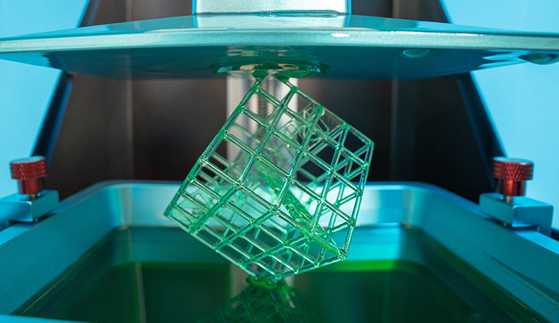
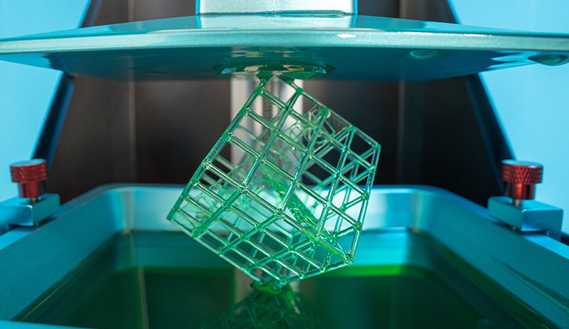

Step 2. The "focused" areas displayed above images show the parts that caused your problem.
If one of the images seems reasonable, click the image to learn how you can solve it.
In none of them make sense, draw the areas by yourself.
Start drawing
Redraw
Finsh drawing
 
